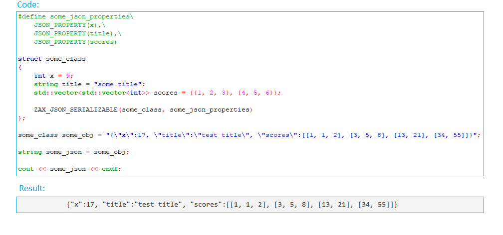

Zax is a very basic JSON parser implemented in C++11 with probably the simplest possible interface, providing a kind of a struct to JSON and JSON to struct conversion. I have tried it out only with 64 bit GCC compilers. The library seems to work, but it has no tests, and its error handling was not even tried out. I made it public because I was searching for something similar in C++ previously without luck, and I hope it will be useful for someone. The implementation is missing some features, as I have implemented only the features I needed.
Architecture
Zax parser has a layered architecture. All the layers are accessible via an API.
ZaxJsonFlatParser
Tokenizes the top element of a JSON string. The tokenized values are stored either in the m_values or the m_list_values member of the class, depending on whether the top element is a dictionary or a list. Using ZaxJsonFlatParser class, a kind of a lazy parsing can be achieved.
It is recommended if there is no need to parse the whole JSON string.
Constructor Syntax: ZaxJsonFlatParser([a_json], [a_in_situ], [a_success])
-
a_json: (input)(const char*) json string. Even it is passed as const, the string content might be changed during parsing.
-
a_in_situ: (input)(boolean) if true, the input string will be altered during parsing, resulting in a better performance. If you want to have your input string untouched, please set it to false. Default value is true.
-
a_success: (output)(boolean*) if used, the passed parameter will get a value of true if the parsing was successful, and a value of false otherwise. Default value is 0.
-
-
| The library was not tested with invalid JSONS strings. |
| All the resulting tokens are char* strings, and may point in the original buffer, or a newly allocated one, depending on the value of the a_in_situ argument. |
Example 1:
ZaxJsonFlatParser json_doc("{\"title\":\"some title\",\"x\":17}", false);
cout << json_doc.m_values["title"] << endl;
cout << json_doc.m_values["x"] << endl;Result:
some title
17Example 2:
ZaxJsonFlatParser json_doc("{\"title\":\"some title\",\"x\":17}", false);
const char* tmp = json_doc.m_values["no_such_key"];
cout << (int) tmp << endl;Result:
0| The return value should be checked for a 0 value. In case of lists, over indexing is not allowed. |
Example 3:
ZaxJsonFlatParser json_doc("[3, 7, 11]", false);
cout << json_doc.m_list_values[0] << endl;
cout << json_doc.m_list_values[1] << endl;
cout << json_doc.m_list_values[2] << endl;Result:
3
7
11Example 4:
ZaxJsonFlatParser json_doc("[\"3\", \"7\", \"11\"]", false);
cout << json_doc.m_list_values[0] << endl;
cout << json_doc.m_list_values[1] << endl;
cout << json_doc.m_list_values[2] << endl;Result:
3
7
11| Mixed lists like [3, \"7\", \"11\"] are not supported. |
Converter functions
In order for these functions to work, a macro needs to be defined describing meta information on the names of the fields of the object to be converted to- or from json strings. Pls see the examples.
By using these functions, existing code does not need to be changed, therefore these might be used even for classes located in 3rd parties, or other places where no code change is desirable.
zax_convert_to_json
Is a macro function which creates a json string from an object.
Syntax: zax_convert_to_json([a_json], [a_obj], [a_json_properties])
-
a_json: (output)(const char*) json string. Needs to be allocated by the caller.
-
a_json_buffer_length: (input)(int) the length of the memory field allocated for the json string passed as first argument.
-
a_obj: (input)(const some class with public members) The input object to be converted to a JSON string.
-
a_json_properties: (input)(descriptor macro) meta information on the members of the class of the object passed as a_obj.
-
boolean: true on success, false on fail.
| Class members which are not present in the a_json_properties argument macro will not be inserted in the JSON string. |
Example 1:
struct struct1
{
int x = 7;
string name = "seven";
};
#define struct1_json_properties JSON_PROPERTY(x), JSON_PROPERTY(name)
struct1 some_obj;
char json_string[1000];
zax_convert_to_json(json_string, sizeof(json_string), some_obj, struct1_json_properties);
cout << json_string << endl;Result:
{"x":7, "name":"seven"}
Aliases can be used by extending the json property descriptor in the following way:
Example 2:
...same code...
#define struct1_json_properties JSON_PROPERTY(x), JSON_PROPERTY(name, "with_letters")
...same code...Result:
{"x":7, "with_letters":"seven"}zax_convert_from_json
Is a macro function which can fill up fields of an object with values from a json string.
Syntax: zax_convert_from_json([a_json], [a_obj], [a_json_properties])
-
a_json: (input)(const char*) json string. Even it is passed as const, the string content might be changed during parsing.
-
a_obj: (output)(some class with public members) The output object. The fields of this object will be filled with the values in the JSON string.
-
a_json_properties: (input)(descriptor macro) meta information on the members of the class of the object passed as a_obj.
-
boolean: true on success, false on fail.
Example 1:
struct struct1
{
int x = 7;
string name = "seven";
};
#define struct1_json_properties JSON_PROPERTY(x), JSON_PROPERTY(name)
char json_string[] = "{\"x\":11, \"name\":\"eleven\"}";
zax_convert_from_json(json_string, some_obj, struct1_json_properties);
char json_string2[10000];
zax_convert_to_json(json_string2, sizeof(json_string2), some_obj, struct1_json_properties);
cout << json_string2 << endl;Result:
{"x":11, "name":"eleven"}| Possible extra elements in the input JSON string are ignored |
SERIALIZABLE macros:
These macros are adding some constructors and operators to your class, making your objects assignable with JSON strings, and printable to "cout".
These macros are recommended if you are the one writing the code of the classes that needs to be JSON serializable, you need at least one of the features it provides, and the features does not interfere with other aspects of your design.
ZAX_JSON_SERIALIZABLE
Besides the constructors having char* and string arguments, this macro also adds a default constructor to your class.
Example 1:
#define struct2_json_properties\
JSON_PROPERTY(int1),\
JSON_PROPERTY(int2),\
JSON_PROPERTY(string1),\
JSON_PROPERTY(string2)
struct struct2
{
int int1;
int int2;
string string1;
string string2;
ZAX_JSON_SERIALIZABLE(struct2, struct2_json_properties)
};
string json_string = "{\"int1\":11, \"int2\":7, \"string1\":\"eleven\", \"string2\":\"seven\"}";
struct2 some_obj = json_string;
string json_string2 = some_obj;
cout << json_string2 << endl;
cout << some_obj << endl;Result:
{"int1":11, "int2":7, "string1":"eleven", "string2":"seven"}
{"int1":11, "int2":7, "string1":"eleven", "string2":"seven"}| ZAX parsable classes needs to have a default constructor, and ZAX_JSON_SERIALIZABLE will try to add one to your code. Therefore, in case you already have your own default constructor, ZAX_JSON_SERIALIZABLE will not work. In this case please use the ZAX_JSON_SERIALIZABLE_WDC macro. |
ZAX_JSON_SERIALIZABLE_WDC
This macro adds only the constructors having char* and string arguments but adds no default constructor to your class.
Example 1:
#define struct2_json_properties\
JSON_PROPERTY(int1),\
JSON_PROPERTY(int2),\
JSON_PROPERTY(string1),\
JSON_PROPERTY(string2)
struct struct2
{
int int1;
int int2;
string string1;
string string2;
struct2()
:int1(10)
{}
ZAX_JSON_SERIALIZABLE_WDC(struct2, struct2_json_properties)
};
string json_string = "{\"int1\":11, \"int2\":7, \"string1\":\"eleven\", \"string2\":\"seven\"}";
struct2 some_obj = json_string;
string json_string2 = some_obj;
cout << json_string2 << endl;
cout << some_obj << endl;Result:
{"int1":11, "int2":7, "string1":"eleven", "string2":"seven"}
{"int1":11, "int2":7, "string1":"eleven", "string2":"seven"}Parsing of data structures
Currently std::vectors are supported:
Example 1:
#define struct3_json_props \
JSON_PROPERTY(x), \
JSON_PROPERTY(title, "name"), \
JSON_PROPERTY(options)
struct struct3
{
int x;
string title;
vector<string> options;
ZAX_JSON_SERIALIZABLE(struct3, struct3_json_props)
};
struct3 obj1 = "{ \"x\":99, \"title\":\"test bible title\", \"options\":[\"option 1\", \"option 2\", \"option 3\"]}";
string json_string2 = obj1;
cout << json_string2 << endl;Result:
{"x":99, "name":"", "options":["option 1", "option 2", "option 3"]}
It also works recursively:
Example 2:
#define struct3_json_props \
JSON_PROPERTY(x), \
JSON_PROPERTY(scores)
struct struct3
{
int x = 9;
std::vector<std::vector<int>> scores = {{1, 2, 3}, {7, 8, 9}};
ZAX_JSON_SERIALIZABLE(struct3, struct3_json_props)
};
struct3 obj1;
cout << obj1 << endl;Result:
{"x":9, "scores":[[1, 2, 3], [7, 8, 9]]}| The elements of the vectors in the JSON string might also be strings, even if the vector is of integers, and vice versa. No error or warning will be present, the parsing will be successful in both cases and in both directions. However, mixed lists are not supported. |
Example 2:
#define struct3_json_props \
JSON_PROPERTY(x), \
JSON_PROPERTY(options)
struct struct3
{
int x = 9;
vector<int> options;
ZAX_JSON_SERIALIZABLE(struct3, struct3_json_props)
};
void json_example_03()
{
struct3 obj1 = "{\"x\":99, \"options\":[\"1\", \"2\", \"3\"]}";
string json_string2 = obj1;
cout << json_string2 << endl;
}Result:
{"x":99, "options":[1, 2, 3]}Parsing of structures with fields of serializable structures
Parsing of structures inside structures is also possible, if the meta info of the inner structures are also provided.
Example 1:
#define CClassInside_JOSONProps\
JSON_PROPERTY(x),\
JSON_PROPERTY(y)
struct CClassInside
{
int x = 11;
int y = 7;
ZAX_JSON_SERIALIZABLE(CClassInside, CClassInside_JOSONProps)
};
#define CClass_JOSONProps\
JSON_PROPERTY(title),\
JSON_PROPERTY(x),\
JSON_PROPERTY(inside)
struct CClass
{
CClassInside inside;
int x = 6;
string title = "some title";
ZAX_JSON_SERIALIZABLE(CClass, CClass_JOSONProps)
};
CClass some_obj = "{\"title\": \"some other title\", \"x\": 17, \"inside\":{\"x\":9, \"y\":5}}";
cout << some_obj << endl;Result:
{"title":"some other title", "x":17, "inside":{"x":9, "y":5}}| Of course, you may combine all the features. Note that if you are using an alias name for a filed, you should use the alias name in the JSON string as well. |
Example 2:
#define CClassInside_JOSONProps\
JSON_PROPERTY(x),\
JSON_PROPERTY(y)
struct CClassInside
{
int x = 11;
int y = 7;
ZAX_JSON_SERIALIZABLE(CClassInside, CClassInside_JOSONProps)
};
#define CClass_JOSONProps\
JSON_PROPERTY(title),\
JSON_PROPERTY(options),\
JSON_PROPERTY(aspects, "criteria"),\
JSON_PROPERTY(scores),\
JSON_PROPERTY(x),\
JSON_PROPERTY(inside),\
JSON_PROPERTY(weights)
struct CClass
{
CClassInside inside;
int x = 6;
string title = "some title";
vector<string> options = {"option1", "option2", "option3"};
vector<string> aspects = {"criteria1", "criteria2"};
std::vector<std::vector<int>> scores = {{1, 2, 3}, {7, 8, 9}};
vector<int> weights = {1, 2, 3};
ZAX_JSON_SERIALIZABLE(CClass, CClass_JOSONProps)
};
char json_string_copy[10000];
strcpy(json_string_copy, "{\"x\":99, \"criteria\":[\"aspect x\"], \"title\":\"test title\", \"options\":[\"option 1\", \"option 2\", \"option 3\"], \"nonexisting_field\":\"\", \"scores\":[[1, 1, 2], [3, 5, 8], [13, 21], [34, 55]], \"weights\":[4, 3, 2, 1], \"inside\":{\"x\":\"11\", \"y\":\"9\"}}");
cout << "Json string to be assigned to the object:" << endl << json_string_copy << endl << endl;
CClass some_obj = "{}";
cout << "Field of the object before assignment: " << endl << some_obj << endl << endl;
some_obj = json_string_copy;
string json_std_string = some_obj;
cout << "Json string computed after assignment: " << endl << json_std_string << endl << endl;Result:
Json string to be assigned to the object:
{"x":99, "criteria":["aspect x"], "title":"test title", "options":["option 1", "option 2", "option 3"], "nonexisting_field":"", "scores":[[1, 1, 2], [3, 5, 8], [13, 21], [34, 55]], "weights":[4, 3, 2, 1], "inside":{"x":"11", "y":"9"}}
Values before assignment:
{"title":"some title", "options":["option1", "option2", "option3"], "criteria":["criteria1", "criteria2"], "scores":[[1, 2, 3], [7, 8, 9]], "x":6, "inside":{"x":11, "y":7}, "weights":[1, 2, 3]}
Json string computed after assignment:
{"title":"test title", "options":["option 1", "option 2", "option 3"], "criteria":["aspect x"], "scores":[[1, 1, 2], [3, 5, 8], [13, 21], [34, 55]], "x":99, "inside":{"x":11, "y":9}, "weights":[4, 3, 2, 1]}| As I was implementing the features I needed only, the implementations might be incomplete. Booleans for example are not suported at all. I have implemented the possibility of error handling, but I have skipped to implement the error handling itself in most of the cases, therefore while parsing invalid JSON strings the library might just cause your application to crash. |